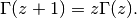
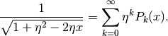
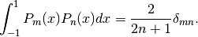

Special Functions¶
There are a lot of useful special function in physics. Some of them provides physics understanding of the problem, some of them helps us writing down a solution quickly.
Among them, Gamma functions, Legendre polynomials, Bessel functions, spherical harmonics, modified bessel functions, spherical bessel functions, and elliptical functions are the most used ones.
Gamma Functions¶
Gamma function satisfies the following relatioin,

For some cases, it can also be written as

One can prove that

Legendre Polynomials¶
Legendre polynomials are solutions to Legendre equation, which is
![\left(\frac{d}{dx}\left[(1-x^2)\frac{d}{dx}\right] + n(n+1)\right) P_n(x) = 0.](_images/math/e575c52a9d2db787ceac90bba86bebd61e08a7f2.png)
Legendre polynomials has many different representations.
Integral

Rodrigues representation

It’s generation function is

Properties
Orthogonality

They all have value 1 at
.
The parity is alternating.
Examples
Through these, we can solve out
Notice that they have physics meanings although it’s better to understand it together with spherical harmonics.


Associated Legendre Polynomials¶
The associated Legendre equation is
![\left(\frac{d}{dx}\left[(1-x^2)\frac{d}{dx}\right] + n(n+1) - \frac{m^2}{1-x^2} \right) P_n(x) = 0.](_images/math/21dc762049ae5642b93400127e8a261248532641.png)
The solution to this equation is Associated Legendre polynomial, which can be represented by

Bessel Functions¶
Bessel functions are solutions to Bessel equation,

They all satisfy these recurrence relations,

Bessel Function of the first kind¶
Use notation  for the first kind.
for the first kind.
Generating function is

Integral representation

It also has a summation representation,

At large  limits, we have
limits, we have

By playing with the recurrence relation,

we can get two more useful relations,

They are very useful when integrating by part.
Graphics and Properties¶

The first 10 zeros of Bessel functions from order 0 to 4.

The first 10 zeros of spherical Bessel functions from order 0 to 4.

Bessel function zeros in a list plot. Horizontal axis is nth zero point, while vertical axis is the value.

Spherical Bessel function zeros.

The difference between zeros of Bessel functions. They are almost the same, which a around Pi.

Spherical Bessel function zeros differences.